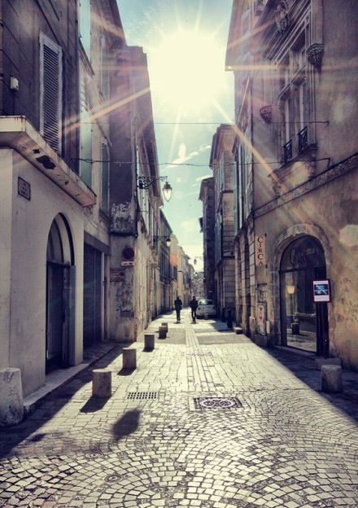

- 
$('#zoom li').imagezoom({
'hoverEffect':true
});
调用方法：
$(selector).slider(options);
options参数
| 参数 | 默认值 | 说明 |
|---|---|---|
| width | [计算] | 图片外层宽度 |
| height | [计算] | 图片外层高度 |
| borderWidth | 0 | 图片边框大小 |
| data | 'original' | 惰性加载时的图片地址源 |
| resizeable | true | 窗口大小改变时是否重新调整图片位置 |
| effect | 'default' | 图片居中方式处理:default最大面积覆盖外框，in最大面积显示完整图片，out在不模糊的情况下最大面积覆盖外框 |
| condition | 'img' | 默认筛选条件 |
| hoverEffect | false | 鼠标悬浮时是否放大 |
| hoverRatio | 1.2 | 鼠标悬浮时放大比例 |
| duration | 300 | 鼠标悬浮时放大动画时长 |
| beforeHover() | [空] | 鼠标进入悬浮前触发 |
| afterHover() | [空] | 鼠标离开悬浮后触发 |